Sirius Web version is now available! Learn More
What is making Eclipse Sirius so unique? That’s its capability to easily create custom graphical modeling tools adapted to each specific need.
With Sirius 4.0 we wanted to bring you new customization features to represent and edit your data, so that you can manage even more cases specific to your own business domain.
You like how simple it is to define diagrams with Sirius? Now, you will love how to define beautiful and ergonomic custom properties views! Sirius 4.0 comes with an integrated way to define your own properties views in the same way as you are used to define the other parts of your representations: no need to code, it is dynamic and query based.
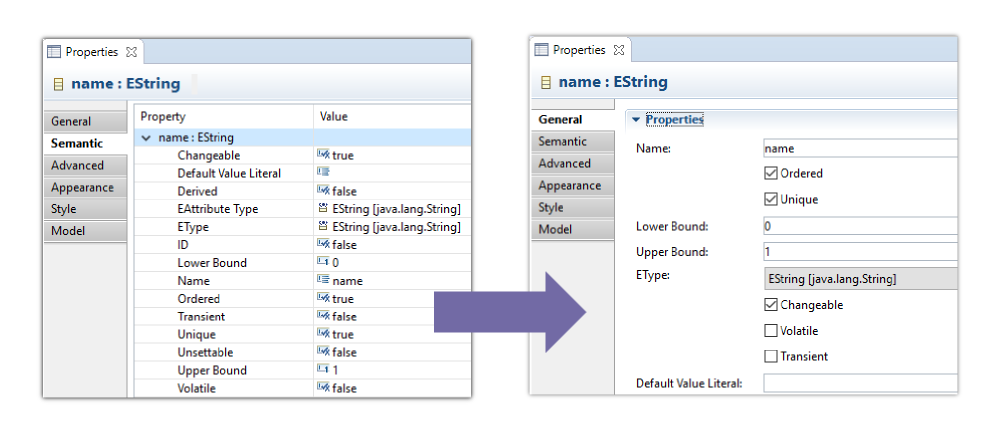
Now, Sirius allows you to specify and group widgets to represent and edit your semantic elements: text, text area, checkbox, select… on which you can also specify conditional styles and validation rules.
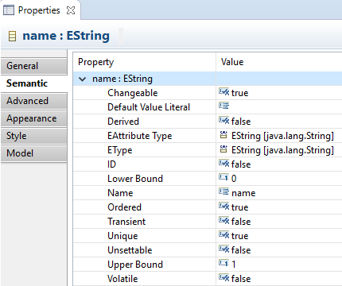
And the icing on the cake: if you don’t specify any specific property view, Sirius automatically provides dynamic views that are already much better compared to those coming with EMF.
Provided as experimental, this feature will be officially available with Sirius 4.1, just after Neon.1. Meantime, you can already install it and dramatically improve your graphical editors and help us streamline the feature with your feedback.
Sirius 4.0 offers many new options to improve the user experience on your diagrams, such as you can build modeling tools that better fit your business domain’s requirements.
On a container having border nodes, now you can specify on which side each kind of border node should be placed: SOUTH, WEST, NORTH or EAST.
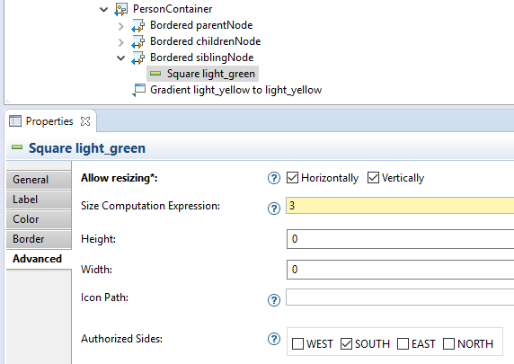
Sirius will automatically place the nodes on the right side and prevent the user to move a border on unwanted sides.
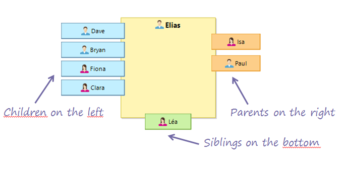
With Sirius 4.0 you can go further with SVG files: declare bundled image shapes and you will get a library of images that you can dynamically customize!
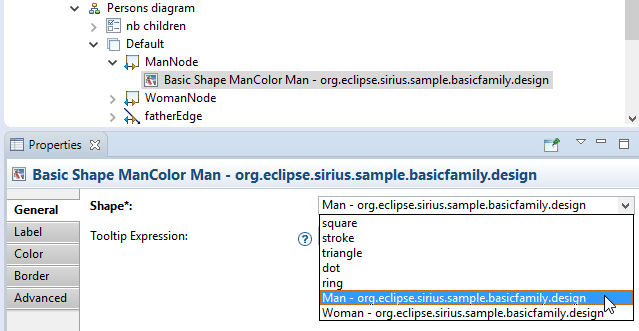
You can change the color, the border color and the border size. By combining this new feature with conditional styles, the same SVG image will change according to the properties of the diagram element.
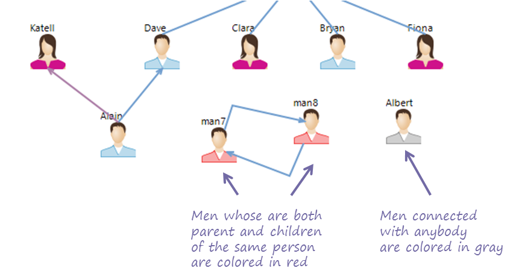
Filters allow users to hide diagram elements according to predefined rules. With Sirius 4.0, it is possible to define filters that can be configured by the user.
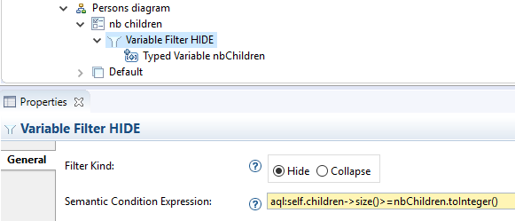
When the user selects the filter, a dialog appears for each variable that lets him define its own value.
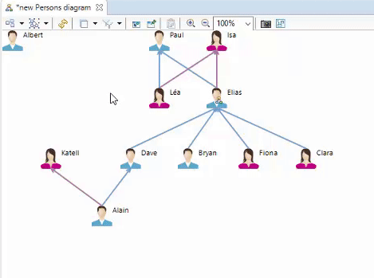
The content of the diagrams tabbar can be completely reorganized according to your needs. It was already possible to add buttons, but now you can also remove default buttons or change their order. This can be done thanks to a new extension point named org.eclipse.sirius.diagram.ui.tabbarContributor.
Now, when writing expressions, you can reuse customizations defined in the EMF.Edit plugin: label providers, property descriptors, etc. This can be done by using a new class named org.eclipse.sirius.ext.emf.edit.EditingDomainServices

With Sirius 4.0 your modeling tools become localizable! All the fields containing a value visible by the end user are represented with a blue background in the Viewpoint Specification Model.
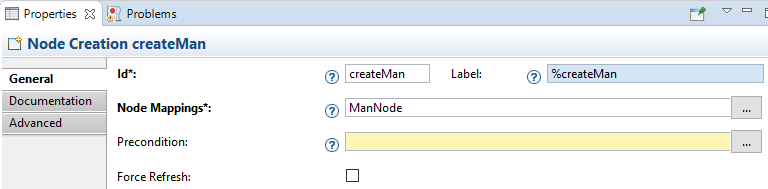
They indicate that you can use keys (%myKey) that will be replaced at runtime with a value depending on the current language (the values are defined in the files plugin_XX.properties).
Many other improvements come with this new release. Here is a glimpse of those that directly concern the users’ experience.
The management of SVG files have been improved to keep a high-quality rendering when zooming or resizing an image.
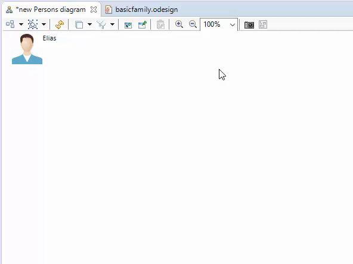
Like tools such as Google Maps, you can now click and drag the diagram to change the visible area. With Sirius, this drag mechanism is available with a middle click.
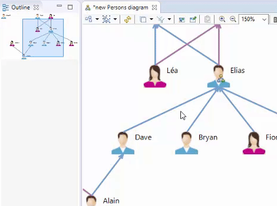
A significant improvement has been brought in the 4.0 release to make large sessions unload almost immediately.
Just download this new version and try it right now!
The complete list of changes is available here: http://www.eclipse.dev/sirius/doc/Release_Notes.html#sirius4.0.0.
Read What's new in Sirius 3.1 to see the new and noteworthy features of previous version.